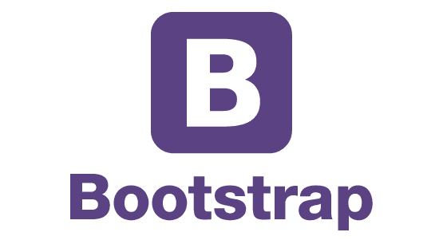
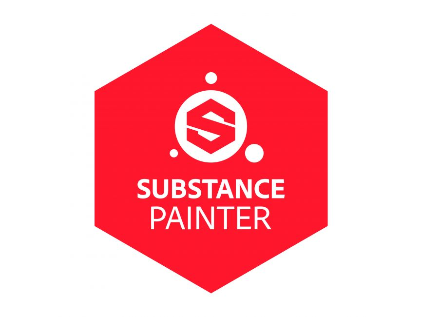

If you can dream it
you can do it.
Personal introduction

MASAAKI
At the age of 40, I decided to change jobs and retired from my job (civil servant: firefighter) after about 14 years. Currently, I am studying English and programming in Cebu, Philippines.
I am currently struggling to change jobs to become an IT engineer with no experience in the industry.Although the risk is 1000%, I am studying every day with students and working adults who are currently in their 20s with the spirit of ``I can do it if I try.'' I am working on play.
This is a blog and portfolio site where I record my experiences and growth (or fall) process. (unmarried)
Hobbies: Eating, sleeping, watching NBA & MLB, muscle training, general ball games, having fun, swimming, visiting new restaurants and spas in new places
Favorite things: Meat, rice, beer, playing with my dog, things that fly, taking on challenges in exchange for risks, acting alone
Dream for the future. Goal: Do original work that is useful to people. Build your career as an IT engineer by changing jobs overseas
Favorite word
"Be an idiot
Be completely stupid
shame
I'm completely ashamed
I'm embarrassed to scratch
You'll see it when you're naked
I can see my true self
The real me was laughing too
That much
Be an idiot" - Antonio Inoki -
Career
- Born in Tokyo and raised in Chiyoda Ward. The surrounding area was full of buildings, so I grew up yearning for a place rich in nature.
- The eldest of three brothers, started playing minibus in elementary school, and has since played various ball games (baseball, soft tennis, lacrosse).
- Graduated from Nihon university, studied mechanical engineering. Research theme: “Connection stiffness estimation method using neural networks”
- After that, I started looking for a job, but I felt that there was a limit to my studies in science, so I gave up on finding a job at a manufacturer and started following the same path as my father, becoming a civil servant.
- During my tenure, I was engaged in field activities as a "firefighter" for about six years, and then worked for several years in the equipment department and information and communications department at the headquarters.
- While working there, I obtained an MBA for working adults at a graduate school, and my main field was organizational theory.
Master's thesis topic: "The psychological impact of interpersonal relationships with superiors and personnel evaluation systems on employees in a telework environment." - I attended an IT vocational school for one year and a CG production vocational school for half a year at my own expense.
- I became interested in foreign countries through the influence of my Korean girlfriend, whom I met at my part-time job during my university days, and began to travel abroad frequently, and since then I have visited many different places. Countries visited in the past (Taiwan, South Korea, Malaysia, Thailand, Singapore, Australia, India, Canada, Hawaii, Bali, France, Vietnam, Philippines)
- During my summer vacation, I participated in a Korean language learning program at Yonsei University in South Korea for one month in order to visit my girlfriend while I was in college. There, I deepened my friendships with friends overseas and learned the joy of living in a foreign country, and became interested in studying abroad, but due to financial reasons he chose to pursue a job.
- After working for several years, the dream of studying and working abroad flickered in my mind, so I decided to study abroad in my early 30s and decided to study abroad at an IT school in Vancouver. After deciding on a school and paying by bank transfer, I got so scared that I gave up on studying abroad and started to get married to the girlfriend I was dating at the time.
- However, even though I continued to work, the dream of studying abroad flickered in my mind, and when I turned 40, I realized that I only live once, but if I didn't do it, I would regret it after I die, so I decided to make a lifelong decision and pursue the path of studying abroad. Decide.
- He retired from his job of about 14 years and is currently working at a Japanese programming school in Cebu Island, where he is learning coding and English while battling his eyesight, which is getting worse every day.
About the future
After studying abroad in Cebu, he plans to study COOP in Vancouver, Canada for two years. I plan to study as a game programmer at an IT vocational school for one year, and then work at a local company for one year.
my blog

Portfolio

Creating an aluminum can for juice
I created a can for drinking water using the 3D production software MAYA. It was difficult to recreate the shape of the pull tab on the drinking spout. After creating the shape, I applied UV development and applied the texture created in Photoshop to create the design. It was difficult to get the feel of aluminum by adjusting the roughness and metalness of the material. After that, I used Arnold to do the rendering.
I made an antique key. It was interesting to recreate the old, slightly peeled-off image that appears in the game. I tried modeling the shape of a key using MAYA. I searched websites for key models of various shapes and created one with a circular handle. After modeling, I used Substancepainter to assign a material with the image of brass to express the dirt, rust, and scraped feel of the material.
Antique keys rendered with Arnold. I've tried various ways to place it, but it looks like it's floating a little. In the future, I plan to pay more attention to placement and lighting. The base is a board modeled in MAYA and given a wood texture using Substancepainter.
This is a metalness element created by UV-expanding a sword created with MAYA. The intricate patterns on the handle and tsuba were created using images designed in Photoshop using Zbrush's alpha function.

It was created with the image of a rugged and strong sword like the one used by gladiators. The scratches on the handle, tsuba, and blade were reproduced using Substancepainter. After creating the scabbard and sword separately, I tried rendering them using Arnold.
Technical field of interest


- 


- 


Qualifications held
Large vehicle driver's license, large motorcycle driver's license, small mobile crane operation qualification, slinging, hazardous materials handler class 2 class 4, fire equipment engineer class 6 class, Eiken 2nd grade, Kanjiken 2nd grade, Mathematics Examination 2nd grade, TOEIC SCORE 700, Scuba License (NAUI), Linux Professional lnstitute Essentials, Fire Prevention and Disaster Prevention Manager Qualification Grade A